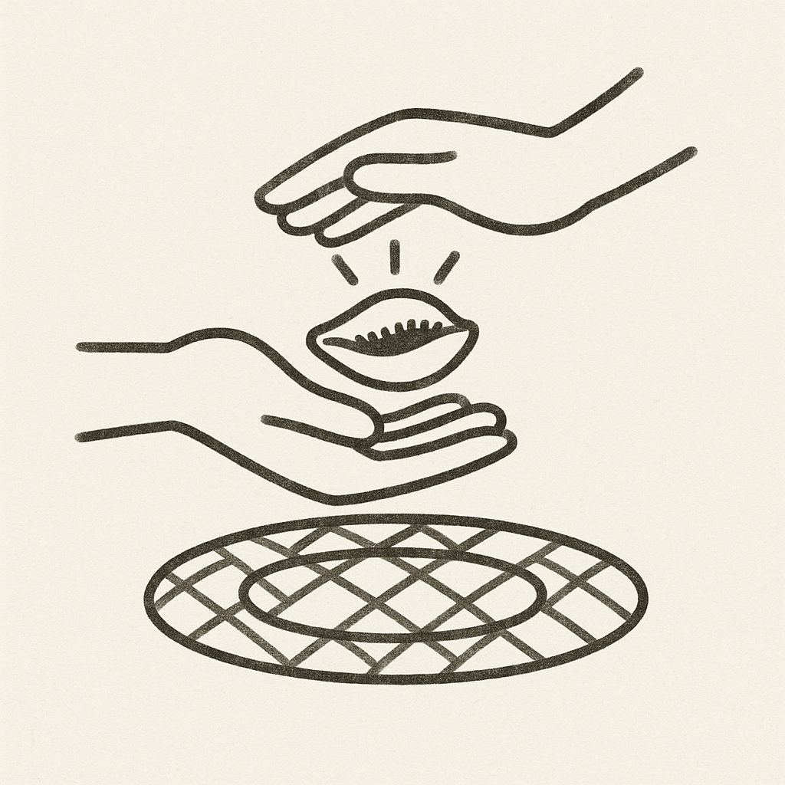
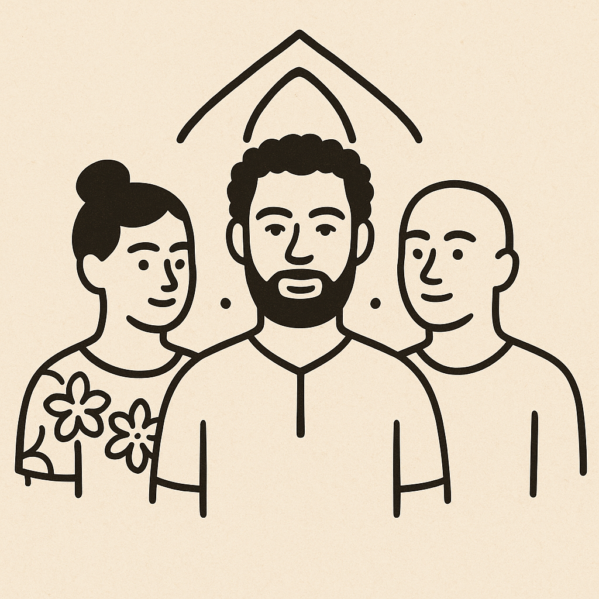

 L’échange crée la richesse
Chaque échange de $KNY peut inclure un geste numérique : respect, unité, partage. Ce geste agit comme un minage symbolique, créant de nouveaux tokens.
 Redistribution communautaire
Redistribution communautaire
Les tokens minés sont versés dans un pool collectif. Ce pool est redistribué à tous les détenteurs, garantissant qu’aucun membre n’est oublié.
 Le rôle des Porteurs de Voix
Les Porteurs de Voix amplifient la puissance de minage, sans gain personnel. Ils symbolisent la transmission et la voix du peuple.
 Pourquoi c’est unique ?
Pourquoi c’est unique ?
Parce que $KNY ne récompense pas l’individu, mais le lien social.